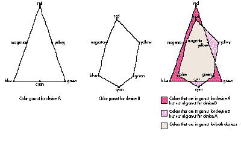

Accurate color matching used to be out of reach for most programmers to add to their
applications. Then along came ColorSync, a system extension that provided a platform
in QuickDraw for maintaining consistent color from device to device. Now with the
advent of QuickDraw GX, which integrates ColorSync, color matching has been made
even easier. Read on to find out how color matching works in QuickDraw GX and how to
take full advantage of it, whether you're developing an application or a printer driver.
Remember how impossible it used to be to get color images to display faithfully on any
monitor or to print on any printer in colors that matched what the user saw on the
screen? The introduction of ColorSync finally transformed color matching in
QuickDraw from a complicated guessing game into a more-or-less predictable process.
ColorSync provided a standard API that could produce WYSIWYG color output if used by
both the application and the printer driver.
QuickDraw GX goes a step farther, fully integrating ColorSync for color management.
When you create a QuickDraw GX application or printer driver, you don't need to
worry about making ColorSync calls. You simply use the QuickDraw GX API and let it
call ColorSync as appropriate. ColorSync does the work of converting a QuickDraw GX
color specification into terms understandable to the output device. The first part of
this article, which assumes you're somewhat familiar with QuickDraw GX, describes
color specification and outlines the conversion process. What's left for your
application or printer driver to do is the topic of the second part of this article.
The starting point for color matching in QuickDraw GX is the exact specification of
color that's included in every object to be drawn. Recall that the basic building block of
QuickDraw GX graphics is the shape, an object that in turn points to other objects that
tell how it should be rendered. In particular, the ink object contains detailed
information about the color to be used.
The color information for a geometric or typographic shape is contained in the gxColor
data structure, which in abbreviated form looks like this:
typedef struct {
gxColorSpace space; // the color space
gxColorProfile profile; // the color profile
union {
. . .
gxColorValuecomponent[4]; // the color value (one, three,
// or four color components)
} element;
} gxColor;
The color information for a bitmap shape is handled in a slightly different way,
discussed at the end of this section. For any QuickDraw GX object, the color space,
color profile, and color value together constitute a device-independent description of
the color in which the object is to be rendered.
THE COLOR SPACE AND COLOR VALUE
A color space is a system for specifying colors. The color space determines how many
different components are required to specify a color and what those components are.
For example, the RGB color space uses three components to specify a color (red,
green, and blue); the CMYK color space uses four (cyan, magenta, yellow, and black).
The color value is the set of components that together specify a color. In QuickDraw GX,
a color value consists of one, three, or four 16-bit integers, which are interpreted
based on the color space. For instance, for a color specified in the RGB color space, the
color value might be red = 32,768, green = 16,384, blue = 8,192.
In QuickDraw, all color is defined in the RGB color space. Unfortunately, since RGB is
a device- dependent color space (more on this later), the same RGB color can look
different on different devices. ColorSync provides a mechanism to match colors
accurately, but QuickDraw applications are still restricted to RGB. High-end desktop
publishing and photo-editing applications allow their users to work in other color
spaces, but such applications have to include large chunks of code to work around
QuickDraw in order to do this.
QuickDraw GX, on the other hand, provides a wide choice of color spaces. These color
spaces can be grouped into three families: RGB, CMYK, and CIE. Within a family, one
color space can be converted to another relatively simply. Color spaces in the RGB and
CMYK families are device dependent because they're related to how a particular device
represents color. Color spaces in the CIE family, on the other hand, are device
independent because they're related to human visual perception.
The RGB family of color spaces. Color spaces in the RGB family are based on
controlling the intensities of red, green, and blue light, the three primary colors used
in displays. Most desktop scanners and monitors as well as some printers work in
some form of this color space. The RGB family consists of gxRGBSpace (red, green,
blue), gxHLSSpace (hue, lightness, saturation), gxHSVSpace (hue, saturation, value),
and gxGraySpace (a one-component gray scale).
The CMYK color space. The CMYK color space (the only member of the CMYK
family) is based on controlling the concentrations of cyan, magenta, yellow, and black
inks, the four process colors used in printing. While colors in the RGB color space are
formed by adding light sources, colors in the CMYK color space are formed by
subtracting light from an illuminating source. A component in a CMYK color value
specifies the amount of light one of the inks absorbs. In theory, cyan absorbs red light,
magenta absorbs green light, and yellow absorbs blue light.
Under ideal circumstances, mixing cyan, magenta, and yellow inks together on paper
would produce a true black. However, due to ink impurities and a multitude of other
problems, the result is usually a muddy dark brown. For this reason most ink-based
devices have black ink as well.
The CIE family of color spaces. Color spaces in the CIE family are based on a
three-component system of color specification developed by the Commission
Internationale de l'Eclairage (CIE) in 1931. These color spaces are device
independent because the color components are based not on intensities of light in a
display or concentrations of printer inks but on aspects of how the human eye responds
to light at different wavelengths. The CIE family of color spaces consists of
gxXYZSpace, gxCIESpace, gxLUVSpace, gxLABSpace, and gxYIQSpace.
THE COLOR PROFILE
Because of the variations in color representation among individual devices, simply
specifying a color space and a color value doesn't provide enough information for color
matching. The 50% red produced by an Apple 13-inch monitor's cathode ray tube, for
example, doesn't look the same as the 50% red produced by a PowerBook 180c's active
matrix color display. Therefore, we also need to provide information in absolute terms
about how colors look on the device on which an object is drawn. The color profile
provides this information.
A color profile is a characterization of a device associated with an object, usually the
device on which the object was created. The exact contents of the color profile depends
on the color matching method to be used, but certain header data required by Apple's
default color matching method is always present. This header data includes the device
type, manufacturer, model, and, most important, an absolute description of each of the
primary and secondary colors the device can render.
This absolute description consists of a set of response curves and chromaticities. The
response curves are used to convert the color component values into linear values. The
chromaticities are XYZ triplets describing the device's red, green, blue, cyan,
magenta, yellow, black, and white. Recall that the XYZ color space is device
independent; thus, an XYZ triplet describes a color in absolute terms.
SPECIFYING COLOR FOR BITMAP OBJECTS
While it would be possible to have a full color specification for every pixel in a bit
image, this is neither practical nor necessary. Colors in bitmap objects (whether the
object is a bitmap shape or part of a view device object) are handled slightly
differently from colors in geometric and typographic shapes. The bitmap object
contains a single color space and profile. Each pixel in the bit image contains a packed
form of the color component values.
Whether a component is expressed with four, five, eight, or ten bits, the bits in the
data are the most significant bits of the standard 16-bits-per-component QuickDraw
GX colors.
As stated earlier, QuickDraw GX uses ColorSync for color management. Basically,
QuickDraw GX calls ColorSync to do the necessary conversion from a source color to a
matching destination color based on the color specification for a QuickDraw GX object
(which includes the color profile for the source device) and the color profile for the
output device. Because QuickDraw GX calls ColorSync, your application doesn't need to.
ColorSync uses two basic elements to perform color matching: a color profile and a
color matching method (CMM). The color profile, as you know, contains the device
characterization, while the CMM is a component that contains code to perform the
matching. Some CMMs are better thanothers, and some are more appropriate for
certain kinds of devices (for example, ink jet printers versus dye sublimation
printers).
A system will have at least one color profile for each device to be drawn on and at least
one CMM to perform the matching. ColorSync comes with one Apple CMM (the default)
and with color profiles for all Apple monitors currently being manufactured. A device
can have more than one color profile, but only one is selected for use at any given time.
The color profile specifies the CMM to be used. ColorSync will try to use this CMM,
but if it's not available, will use the default Apple CMM. ColorSync's open
architecture allows third-party developers to create their own profiles and CMMs if
they want to perform matching beyond the capabilities of the Apple CMM.
In highly simplified terms, here's how the conversion process works, assuming the
Apple CMM is used:
If a CMM other than the Apple CMM is used, steps 3 and 4 may be different, since the
CMM determines exactly how the conversion is done.
Now that you have a basic grasp of the mechanism for color matching, we'll turn to a
consideration of what applications and printer drivers need to do to take full advantage
of this mechanism.
If you're developing a QuickDraw GX application, there's really not much to worry
about with respect to color matching. If you create your objects with appropriate color
profiles, the colors will be rendered correctly to the extent that the output device is
capable of rendering the specified colors. You can make life easier for your users by
warning them when a color they choose can't be rendered on a designated printer and
by enabling them to preview what a color would look like on a designated printer. And
you can turn color matching off to improve performance in certain situations. We'll
look at these techniques one at a time.
CREATE AND MANIPULATE A COLOR PROFILE
As we've seen, the key to color matching is providing an appropriate color profile for
every QuickDraw GX shape object your application creates. If the objects created by
your application are associated with a particular device, that device's color profile is
the one to reference in the gxColor data structure. So if you're writing a scanning
application, the bitmap objects you create should reference the color profile of the
scanner used. If you're writing a painting or drawing application, your objects should
reference the color profile of the monitor on which the objects were created.
It's appropriate to set the color profile to nil when dynamically creating objects that
aren't associated with any particular device. When the color profile is set to nil,
QuickDraw GX assumes the profile to be the default color profile. The default color
profile is a color profile for some particular, perhaps imaginary, device. What the
device is doesn't really matter because when any object is drawn, its color is
automatically converted into the color space of the destination device using the
destination device's color profile.
Applications can easily find out what a device's color space and color profile are. Every
QuickDraw GX view device object contains a bitmap structure that contains color space
and color profile fields. Files containing color profiles for particular monitors or
scanners can often be found in the ColorSync Profiles folder, which is in the
Preferences folder in your System Folder. Your code canget the ColorSync Profiles
folder by calling GetColorSyncFolderSpec. The application almost never needs to know
what the color space and profile of a printer are, because objects are seldom created
from a printer, but thereis a way to obtain this information, as described in the next
section.
Given a set of ColorSync profile data, your application can create and manipulate a
QuickDraw GX color profile object with the following functions. In all cases, the data is
treated as a ColorSync profile and the ColorSync structures for profiles can be used.
gxColorProfile GXNewColorProfile(long size, void *data);
Creates a new color profile object with the data passed in. The size parameter is the
size of the data, and the data parameter is a pointer to the data. The function result is
the color profile object. If the size is 0, color matching will be disabled for those
objects associated with this color profile object.
gxColorProfile GXSetColorProfile(gxColorProfile theProfile,
long size, void *data);
Changes the data stored in the color profile object passed in the first argument. The
size parameter is the size of the data, and the data parameter is a pointer to the data.
The function result is the changed color profile object.
long GXGetColorProfile(gxColorProfile theProfile, void *data);
Retrieves the color profile data out of a color profile object. The function result is the
size of the color profile data.
Here's how to get the ColorSync profile data from a color profile object:
size = GXGetColorProfile(myProfile, nil);
if (size > 0) {
myPtr = NewPtr(size);
GXGetColorProfile(myProfile, myPtr);
} else {
/* Size = 0, indicating color matching should be suppressed. */
}
This function disposes of a color profile object:
void GXDisposeColorProfile(gxColorProfile theProfile);
CHECK TO SEE IF A COLOR IS IN GAMUT
Not all colors can be rendered on all devices. Each device has a set of colors that it's
capable of reproducing, called acolor gamut. When a color can't be duplicated on a
device, the color is said to be "out of gamut" for that device (see Figure 1). How
out-of-gamut colors are treated depends on the CMM being used: some CMMs may try
to preserve the luminance of the color while others may try to preserve the hue or the
saturation or some other aspect.
Given this state of affairs, you may want your application to warn users when a color
they choose is out of gamut for the printer their document is currently formatted for.
QuickDraw GX provides the following call to check a color against a device's color
profile to see if it's in or out of gamut for the device:
Boolean GXCheckColor(gxColor theColor, gxColorSpace theColorSpace,
gxColorSet theColorSet, gxColorProfile theProfile);
This call takes the gxColor (which contains a color profile and a color space) for the
object, and the color space, color set (similar to a QuickDraw CLUT), and color profile
for the device. The function returns true if the specified color can be rendered on the
device and false if it can't.

Figure 1 How the Color Gamuts of Two Different Devices Compare
It's a simple matter to obtain the color profile and color space for the printer a
document is formatted for. Recall that for each printed document, there's a
corresponding QuickDraw GX job object. The job object contains global document
properties, such as the device information and the number of pages or copies. The
device information is what we're after. Here's the code that gets it for us:
gxColorProfile GetFormattingPrinterProfile(gxJob myDocumentJob,
gxColorSpace *theSpace)
{
gxPrinter frmtPrinter; // the formatting printer object
gxViewDevice printerDevice; // the printer's view device
gxShape devBitmap; // the device bitmap shape
gxBitmap devBits; // the bitmap structure
/* Get the bitmap shape for the printer's device. */
frmtPrinter = GXGetJobFormattingPrinter(myDocumentJob);
/* Pass in 0 as the index to obtain the currently selected
view device from the driver's list of possible view
devices. */
printerDevice = GXGetPrinterViewDevice(frmtPrinter, 0);
devBitmap = GXGetViewDeviceBitmap(printerDevice);
/* Get the bitmap struct, dispose of the shape, return the
profile. */
GXGetBitmap(devBitmap, &devBits);
GXDisposeShape(devBitmap);
*theSpace = devBits.space;
if (*theSpace == gxIndexedSpace)
GXGetColorSet(devBits.set, theSpace, nil);
return (devBits.profile);
}
To obtain just the color profile (instead of the color profileand the color space, fetched
by the preceding code), you can call GXFindPrinterProfile. The prototype is as follows:
long GXFindPrinterProfile(gxPrinter, void *searchData, long index,
gxColorProfile *returnProfile)
PREVIEW AN OUT-OF-GAMUT COLOR
Using the printer's color profile, your application can also enable users to preview
what an out-of- gamut color (or whole picture) would look like on that printer:
Boolean MakePrinterColor(gxJob theJob, gxColor *sourceColor,
gxColor *printedColor)
{
gxColorProfile printerProfile;
gxColorSpace printerSpace;
Boolean inGamut;
/* Get the printer's profile. */
printerProfile = GetFormattingPrinterProfile(theJob,
&printerSpace);
/* Copy the source color. */
*printedColor = *sourceColor;
/* Check it and convert it into the device's color space. */
inGamut = GXCheckColor(printedColor, printerSpace, nil,
printerProfile);
GXConvertColor(printedColor, printerSpace, nil,
printerProfile);
return (inGamut);
}
The color passed into this routine is converted into the printer's color space and
profile. The most closely matching color from the printer's gamut is converted back to
the screen's color space and profile when the color is associated with a shape and
drawn on the screen. Thus, a simulation of what the printer's output would look like is
achieved. As a function result, the code returns whether the color is in or out of gamut
for the printer.
To preview an entire picture, set up an off-screen bitmap in the printer's color space
and color profile, set the gxEnableMatchPort attribute (explained in the following
section) of the view port you're using with the off-screen bitmap, draw the picture
into that off-screen bitmap, and then draw that bitmap on the screen. Make sure also
that the view port you're using to draw on the screen has gxEnableMatchPort set.
TURN COLOR MATCHING OFF AND ON
Color matching is a computationally intensive process, so it slows down performance.
In some situations, such as during scrolling or updating, you may be willing to
sacrifice accurate color in exchange for faster drawing. QuickDraw GX enables you to
turn off color matching in these situations, either for all objects drawn into a view
port or on an object-by-object basis.
You can control color matching for all objects drawn into a view port with an attribute
of the view port object called gxEnableMatchPort. When this bit in the view port's
attributes is set (using GXSetPortAttributes), color matching is performed for all
shape objects drawn into that view port. When this bit is cleared, the color matching
process is bypassed. The result is less-than-WYSIWYG output, but the drawing is
faster. Note that the view port's default is to bypass color matching; your application
has to set the bit to turn color matching on.
You can control color matching on an object-by-object basis by creating a color
profile object of length 0 and associating it with those objects you want to disable
matching for. If an object has the zero-length profile, it isn't matched, even if the
view port's gxEnableMatchPort attribute is set.
If you're developing or thinking of developing a QuickDraw GX printer driver, you
know that it's radically easier than developing a QuickDraw driver. Color matching is
easier with a QuickDraw GX driver as well. In the old world of QuickDraw, your driver
had to have special code to call out toColorSync if it wanted to do color matching. In a
QuickDraw GX driver, you don't have to call anything to get color matching for your
printer. All you need to do is specify at least one color profile.
If you're developing a printer driver for a PostScript device, there are some things
you should know to obtain the highest quality color output from your printer, whether
it's a Level 1 black-and-white or color printer or a Level 2 color printer.
Specifically, with fields in the data structure that gxPostScriptImageDataHdl points to,
you can choose a color space, offload color matching to a Level 2 device, or generate
PostScript code that's Level 2 savvy but can also run on a Level 1 printer (color or
black and white) while retaining all the color information in the source data.
Incidentally, most things discussed here can be implemented in a printing extension as
well.
PROVIDE AT LEAST ONE COLOR PROFILE
Although only one color profile is used at a time in the color matching process, a
printer can have more than one color profile. Each one can be associated with a
particular format (recall that in QuickDraw GX, a format is an object containing the
properties associated with a particular page, including the paper type, which is an
object describing printing media). For instance, the Apple Color Printer has default
color profiles for coated paper, transparency film, and plain paper; a different color
profile is needed for each because paper type can affect the appearance of color.
If you have only one color profile for your printer, a simple and common case, you can
store the profile data in a 'prfl' resource in your printer driver. QuickDraw GX will
read in the data from the resource (using the default implementation of the
GXFetchTaggedData message), make a color profile object out of it, and automatically
associate it with your printer. If you want to create the color profile dynamically
rather than store it in a resource, just override the GXFetchTaggedData message,
looking for the tag 'prfl' and creating the handle on the fly.
Applications can query your printer driver with a GXFindFormatProfile call to find
out which color profile will be used for a particular page of output. (Within the same
document, different pages can be printed on different paper types. For example, a
business letter document might contain an address that prints on an envelope, a letter
that prints on white paper, and a resumé that prints on blue paper.) To support this
application query, your driver must override two messages:
CHOOSE A COLOR SPACE
The preceding discussion of color profiles holds true for all three classes of QuickDraw
GX printer drivers: raster, vector, and PostScript. The remaining discussion applies
only to printer drivers for PostScript devices.
PostScript code can describe colors that the output device is to produce in any of three
different device color spaces. In each case, different operators are used. When you set
the color space, you tell QuickDraw GX what kind of PostScript operators to use when
specifying color for your printer, based on its color capabilities.
You set the color space in the field devCSpace (of type gxColorSpace) in the PostScript
image data structure. Only three values are allowed:
QuickDraw GX calls ColorSync to convert all the colors to be printed into the specified
color space using the color profile your driver provides. It's up to you to specify
values that make sense for your printer, as QuickDraw GX does no sanity checking. For
example, if you specify gxCMYKSpace as your color space but connect to a printer on
which the setcmykcolor operator isn't available, you'll get PostScript errors. The
only color space guaranteed to work on all PostScript printers is gxGraySpace. You can
get around this problem by generating portable PostScript code, discussed later.
OFFLOAD COLOR MATCHING
The PostScript Level 2 interpreter has color matching support built in. This means
that you can offload the expensive work of color matching from the Macintosh to the
PostScript device if it has a Level 2 interpreter. To take advantage of this, set fields in
the PostScript image data structure as follows:
With these settings in effect, QuickDraw GX generates PostScript code that's optimized
for PostScript Level 2 and uses the color management provided by the Level 2
interpreter instead of calling ColorSync. The color space and color profile of the
objects to be printed are translated into a Level 2 color space dictionary, using the
setcolorspace operator. The colors for objects are then set in the graphics state
using the setcolor operator, and bitmaps are drawn using the dictionary form of the
image operator. The image operator is used at eight bits per component when the
source bitmap's color space is a 5- or 8-bits- per-component space, and 12 bits per
component when the source bitmap's color space is a 10-bits-per-component space.
If the gxUseLevel2ColorOption bit isn't set but the language level is 2, QuickDraw GX
will generate code optimized for Level 2 but will work with color based on the
devCSpace as explained earlier.
Not all QuickDraw GX color spaces can be translated to Level 2. For a color space that
can't, QuickDraw GX performs a conversion into one that can. For example, gxCIESpace
(the CIE xyY space) can't be emulated with the setcolorspace operator. All colors in
gxCIESpace are converted into gxXYZSpace -- a color space that can be emulated with
the setcolorspace operator.
GENERATE PORTABLE POSTSCRIPT CODE
Sometimes you don't know what kind of PostScript device your code is going to end up
on. Because all PostScript printers answer to "LaserWriter," a user can connect to
just about any kind of PostScript printer with your QuickDraw GX printer driver.
But, as mentioned earlier, if your driver specifies a color space that's not available on
the printer the user connects with, this will generate PostScript errors. To avoid this
situation, QuickDraw GX is capable of generating "portable" PostScript code -- code
that can be executed on any printer and will produce the best results that printer is
capable of, although it's not necessarily optimized for any one printer.
As stated earlier, the only color space guaranteed to work on all PostScript printers is
gxGraySpace. However, using this color space causes output to be grayscale even if
the PostScript code is sent to a color printer. To get QuickDraw GX to produce
PostScript data that contains all color information but will also render on a
black-and-white PostScript device in grayscale, set the gxPortablePostScriptOption
bit in the renderoptions field and set the devCSpace field to gxRGBSpace.
When you do this, QuickDraw GX defines PostScript procedures to emulate the color
operators when they're not present on the printer that the PostScript file lands on.
Additionally, QuickDrawGX generates PostScript code to set up a Level 2 color space
based on RGB and the color profile specified by the driver. When the PostScript file
lands on a Level 2 color printer, you get color- matched output. The source colors are
converted by ColorSync to the RGB color space using the driver's color profile. This
color profile is translated into a setcolorspace operator so that those RGB colors
have meaning. The translated color profile is ignored on Level 1 printers and the
normal setrgbcolor and colorimage operators are used.
AN ILLUSTRATION: THE LASERWRITER GX DRIVER
Let's consider how the LaserWriter GX driver sets up the PostScript image data
structure. When the driver is used to print to any of the current line of Apple
PostScript printers, the data structure is set up as follows:
When the LaserWriter GX driver doesn't recognize the printer it's talking to, the data
structure is set up like this:
This yields portable PostScript code, which is Level 2 savvy but can also run on a
Level 1 color or black-and-white printer while retaining all the color information in
the source data. Thus, using the LaserWriter GX driver (from either QuickDraw GX
applications or QuickDraw applications) gives better and faster output for color
images on Apple black-and-white printers, color printing on non- Apple Level 1 color
printers, and color-matched printing on Level 2 color printers.
Whether you're developing an application or a printer driver, color matching has
never been easier than with QuickDraw GX. You can work in whichever color space you
want and move data from device to device without worrying about losing information or
writing special code to handle the conversions. Getting basic color matching is free (no
code is necessary) and getting high-end tuned results is easy (only small amounts of
code are required).
The QuickDraw GX color publishing platform seamlessly integrates high-end text and
graphics with the capabilities offered by ColorSync and the PostScript Level 2
interpreter. And if you have a great color matching algorithm, you can easily integrate
your method with all QuickDraw GX applications and printer drivers simply by
writing a standard ColorSync color matching method and providing color profiles.
Color no longer needs to be a complicated guessing game for the user.
REFERENCES
For background information about QuickDraw GX, see these articles in
develop Issue 15: "Getting Started With QuickDraw GX" by Pete ("Luke") Alexander;
"Developing QuickDraw GX Printing Extensions" by Sam Weiss; and "QuickDraw GX for
PostScript Programmers" by yours truly. *
How ColorSync works with QuickDraw is explained in John Wang's column
"Print Hints: Syncing Up With ColorSync" indevelop Issue 14.*For color theory
arcana, see the indispensable Fundamentals of Interactive Computer Graphics by J.
D. Foley and A. Van Dam.*
ColorSync version 1.0.3, along with documentation and samples, can be found on
this issue's CD. The documentation describes how to create a CMM.*
The levels of PostScript and all other details you could possibly want to know
about PostScript are described in thePostScript Language Reference Manual , second
edition.*
The messaging scheme for drivers and extensions is described in Sam
Weiss's article "Developing QuickDraw GX Printing Extensions" in develop Issue 15,
and in Inside Macintosh: Printing Extensions and Drivers. *
DANIEL LIPTON works on QuickDraw GX and writes for develop to subsidize his
songwriting career. He was recently overheard singing the following parody of the
Steely Dan song "FM":
Bury your cubics, mama, quadratic's fine.
Kick off your PostScript printers, it's GX time.
The drivers don't seem to care what's where,
as long as the profile's there.
Nothing but greens and blues
and somebody else's favorite hues.
Give us some pumped-up colors, we'll sync them nice.
Feed us some hungry halftones, we'll print them thrice.
The printers don't seem to care what's where,
as long as GX is there.
No hassle at all. GX. No hassle at all. *
THANKS TO OUR TECHNICAL REVIEWERS Pete ("Luke") Alexander, Tom Dowdy,
Dennis Farnden, Josh Horwich *
Special thanks to duaño, Sean Allen, Chris Yerga, and Dean Yu. *